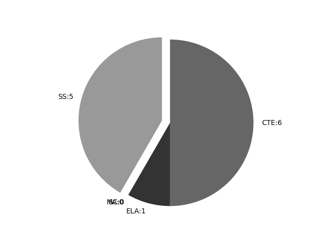

Illinois
Report date: 2021-07-08
The frequency of all keywords found in this state's standards: 12
Comparable state score: 0.296 (median: .303, SD: .324)
The frequency above is the sum of all keywords found in all of this state's four core academic standards and the state's CTE/career standards. This total count is broken down by keyword and discipline area below.
On this site, 'comparable scores' are calculated as: keywords found divided by total words in the standards document(s) - multiplied by 100,000. The comparable scores attempt to normalize data, accounting for very different sizes of curriculum guidance documentation.
Frequencies by keyword or phrase:- spatial: 6
- geographic information system: 1
- Geospatial: 3
- Global Positioning System: 1
- GIS: 1

Frequencies by discipline area: - SS: 5
(Comp: 5.331) - SC: 0
(Comp: 0.0) - MA: 0
(Comp: 0.0) - ELA: 1
(Comp: 0.245) - CTE: 6
(Comp: 0.213)
Support files: Examples of keyword use by discipline area (and document): - CTE
- SY22-Matrix-AFNR.pdf, page:1, position:1302
Leadership Agricultural Commodity Marketing Animal Nutrition Sustainable Agriculture Soil Science Sustainable Agriculture Soil Science Turfgrass and Sports Field Management Geospatial Technology Agricultural Government Animal Ge - SY22-Matrix-AFNR.pdf, page:17, position:2206
positioning systems (GPS), remote sensing (RS), digital image processing simulator (DIPS), Geodesy, automated cartography (Auto-Carto), land surveying (LS), and navigation. These courses may use spatial analysis models and guidelines for integrating, - SY22-Matrix-AFNR.pdf, page:17, position:1962
of society on technologicalenvironmental endeavors. Group 4 21058A001 Geospatial Technology Geospatial Technology courses provide students with experiences pertaining to the study of geographic information systems (GIS), global positioning systems (GPS), remote - SY22-Matrix-AFNR.pdf, page:17, position:1846
and society at large. This courses typically emphasize environmental factors, economics impacts and the influences of society on technologicalenvironmental endeavors. Group 4 21058A001 Geospatial Technology Geospatial Technology courses provid - SY22-Matrix-AFNR.pdf, page:17, position:2689
systems. Group 4 18405A001 Precision Agriculture Precision Agriculture courses provide a fundamental understanding of the principles of precision agriculture. Topics may include Global Positioning Systems (GPS); Geographical Information Systems (GIS) - SY22-Matrix-AFNR.pdf, page:17, position:1993
endeavors. Group 4 21058A001 Geospatial Technology Geospatial Technology courses provide students with experiences pertaining to the study of geographic information systems (GIS), global positioning systems (GPS), remote sensi
- ELA
- Illinois-Priority-Learning-Standards-2020-21-ELA.pdf, page:10, position:249
and nuances in wordmeanings.L 6Acquire and use accurately grade- appropriate conversational, general academic, and domain speciÞc words and phrases, including those that signal spatial and temporal relationships (e.g., After dinn
- SS
- Illinois-Priority-Learning-Standards-2020-21-Social-Science-Learning.pdf, page:4, position:1491
Explain how global changes in population distribution patterns affect changes in land use. SS.G3.6-8.MdC: Explain how changes in transportation and communication influence the spatial connections among human settlements and affect t - Illinois-Priority-Learning-Standards-2020-21-Social-Science-Learning.pdf, page:4, position:210
Interaction: Place, Regions, and Culture SS.G.2.3: Compare how people modify and adapt to the environment and culture in our community to other places. Geographic Representations: Spatial Views of the World SS.G.1.4: Construct and int - Illinois-Priority-Learning-Standards-2020-21-Social-Science-Learning.pdf, page:6, position:2613
and services, the role of lenders, and interest. SS.EC.FL.5.9-12: Evaluate the risk and returns on diversified investments. Geography SS.G.1.9-12: Use maps (created using geospatial and related technologies, if possible), satellite - Illinois-Priority-Learning-Standards-2020-21-Social-Science-Learning.pdf, page:6, position:2725
investments. Geography SS.G.1.9-12: Use maps (created using geospatial and related technologies, if possible), satellite images, and photographs to display and explain the spatial patterns of physical, cultural, political, econom - Illinois-Priority-Learning-Standards-2020-21-Social-Science-Learning.pdf, page:7, position:79
{kind=link}